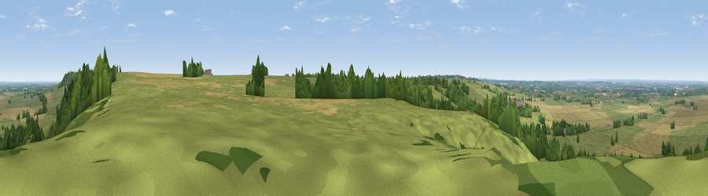

Viewpoint near Long Clawson
#14685 in England · top 13% of its area beats it · near Long ClawsonWhere it is
The exact computed spot (SK 75175 26875). Click the marker for map links.
The view, rendered

A 360° render of this exact spot computed from the terrain model, tree cover and land cover — summer colours, afternoon light, calibrated against photographs of famous viewpoints. Real trees, hedges and buildings will differ in detail.
The panorama
Grey silhouette: terrain skyline in each direction (720 bearings, Earth curvature and refraction included). Dashed green: skyline with trees (+15 m) and buildings (+8 m) as obstacles. Blue strip: how far the ground is visible on each bearing.
Where the view opens
Wedge length = distance to the farthest visible ground on that bearing (vegetation-aware). Rings at 10, 25 and 50 km.
What fills the view
67% grassland · 20% cropland · 12% woodland ·
Angular shares of the visible panorama (visual magnitude), not map area. Landscape diversity 0.38 (0–1 Shannon).
Key numbers
More beautiful places nearby
The staircase of upgrades: each row has a higher view potential than everything closer. Driving times are estimates from straight-line distance, calibrated against real road routing — check an actual route before setting out.
| Place | Direction | Drive | Score |
|---|---|---|---|
| Viewpoint near Eastwell | NE · 1 km | ~3 min | 61.4 |
| Viewpoint near Eastwell | NE · 2 km | ~4 min | 63.7 |
| Viewpoint near Stathern | NE · 5 km | ~11 min | 66.3 |
| Viewpoint near Stathern | NE · 5 km | ~12 min | 67.2 |
| Viewpoint near Belvoir | NE · 9 km | ~18 min | 68.9 |
| Viewpoint near Belvoir | NE · 10 km | ~19 min | 70.8 |
| Broombriggs Hill | WSW · 27 km | ~43 min | 74.4 |
| Viewpoint near Woodhouse Eaves | WSW · 27 km | ~43 min | 77.7 |
52.83416, -0.88556 · source: screening · position refined by local search. Computed location — check access rights before visiting.